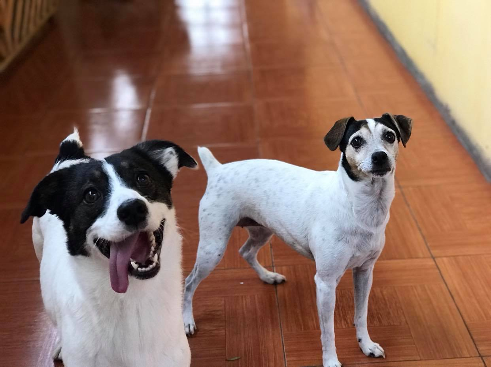
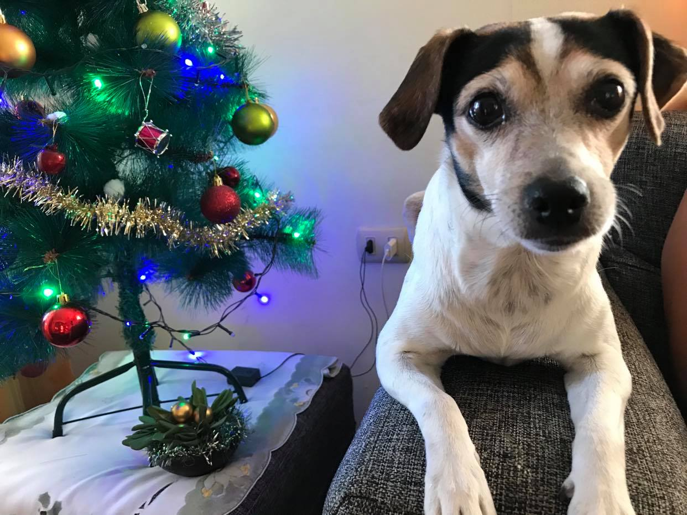
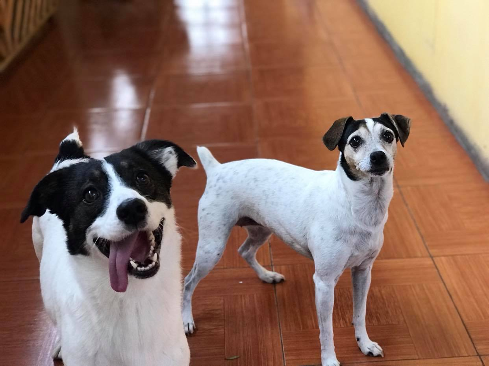
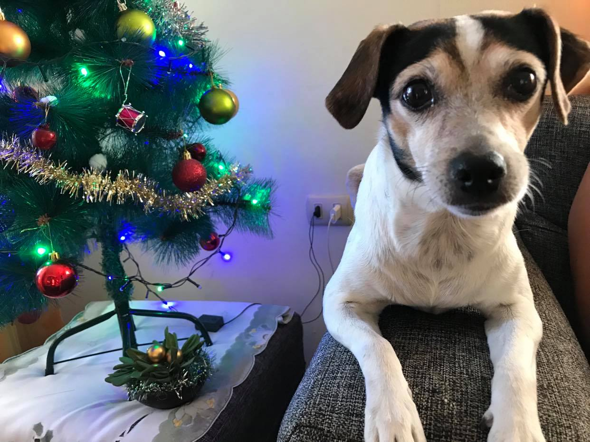

El Fox terrier es una raza canina originada en Inglaterra hace aproximadamente 200 años y que fue utilizada en
sus inicios para ahuyentar a los zorros de sus madrigueras que posteriormente eran perseguidos por perros de
caza.
Las actividades desarrolladas por la raza en ese entonces, lograron desarrollar en él una gran resistencia y se
cree que es el resultado de un cruce entre perros Terriers de pelo liso, Teckel o Dachshund, Beagle, y en
algunos casos Stafordshire Bull Terriers. El término «fox terrier» se comenzó a emplear de una forma genérica
hacia finales del siglo XIX haciendo referencia a un grupo de perros que eran criados para la cacería.
El Fox Terrier es un perro vital y elegante. Es alegre, inteligente, valiente y
totalmente terrier. Es listo y atractivo, posee un gran optimismo y una bravura incuestionable. Es un perro
hermoso, deseable como compañero y útil. Además, es un perro de buen tamaño y fácil de tener en un piso en la
ciudad. De todas formas, es un perro muy activo y le gusta tener un amo tan interesado por la vida como él.
Una característica común de todas las razas de terrier es su deseo de trabajar con gran entusiasmo y valentía.
Tienen todos una dentadura grande y fuerte en proporción con su talla, además de un buen oído y una excelente
vista. Sin importar durante cuántas generaciones hayan sido criados como mascotas, el propósito con el que la
raza fue creada permanece vivo en ella.
Los Fox Terrier son, básicamente, perros sensatos. No se quedarán de pie en el jardín ladrando durante horas
como sí harán otras razas, sino que ladrarán cuando oigan un ruido para alertar a sus amos. Es un luchador nato
y disfrutará con una trifulca de vez en cuando, o por lo menos disfrutará persiguiendo a un gato hasta que éste
se suba a un árbol. Todos los terrier, dado su instinto, tienen tendencia a excavar en el jardín si se aburren.
Los terrier no son razas con las que resulte fácil trabajar en obediencia. Su inteligencia superior a la media y su talante independiente pueden suponer un mayor reto. No sólo son inteligentes, sino que, además, quieren complacer a sus amos.
Siempre alerta y dispuesto para la acción, el fox terrier de pelo duro es un perro activo que necesita mantenerse ocupado. Si se aburre, buscará sus propias distracciones, ya sea excavar, ladrar o buscar otro "entretenimiento". Es un terrier atrevido y extrovertido que debe mostrarse amistoso con las personas, aunque siempre asomará su agudo instinto de caza.
Como es un cachorro muy nervioso y enérgico, al fox terrier le gusta morder. Vigila qué dejas a su alcance, porque nada estará a salvo. Esta costumbre debe ser educada rápidamente y desde pequeño, con autoridad y firmeza; sobre todo cuando lo hace con personas y aún más cuando juega con niños. El problema es que el fox terrier cachorro no es capaz de dosificar su energía y puede morderles o pellizcarles por su entusiasmo durante el juego.
Como adultos, son grandes guardianes, atentos en todo momento a quien interrumpa en casa, ya sean visitas o perros y gatos que puedan rondar por el patio o alrededores de la casa. Son excelente compañia, pues su carácter travieso aun se hace notar y llenan la casa de alegría. De adultos son algo reservados, la interacción con otros animales o personas ajenas al hogar se hace mas dificultosa.
Como senior, los Fox Terrier aún pueden hacer notar su gran energía y vitalidad, sobretodo en el juego y paseos. En esta etapa buscan más compañía. El estar lo más cerca de su amo, los hace muy felices. Muestran que son independientes pero que a veces también requieren de ayuda, por ejemplo al subir a un sillón o cama, más que nada para consentirlos. Les gusta tomar el sol y siestas largas. En el invierno son los primeros que estan esperando la estufa.